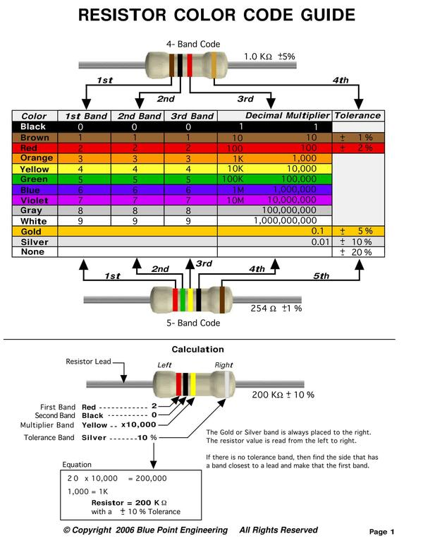
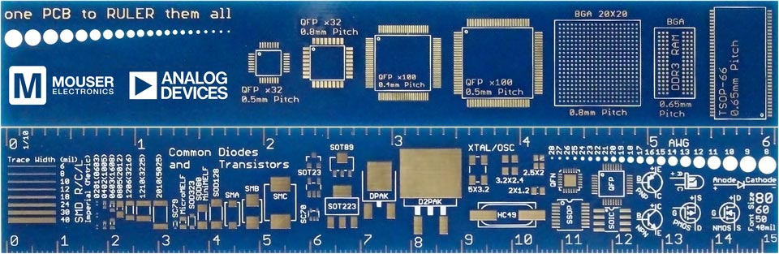
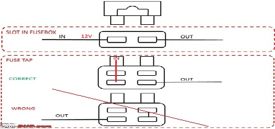
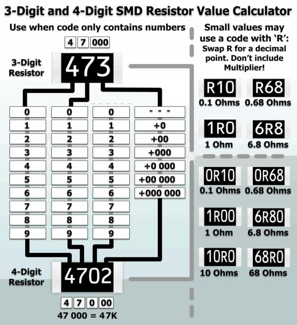
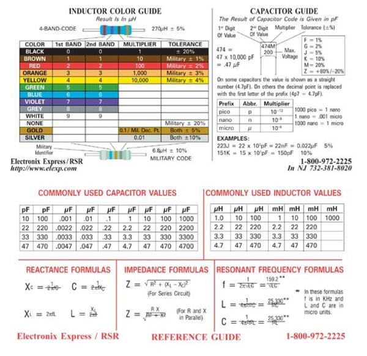

TV repairs
ServiceTVServiceTV Blog
Forumul electronistilor
HW Hacking Handbook
IMSProg - 25C(SPI) and 24C(I2C) flash programmer
EMMC - 1 wire data mode
firmwares
Vortex firmware dumps
TV firmware dumps
Pro electronica - TV firmware dumps
for comparison: dhex file1.bin file2.bin
check: binwalk file1.bin for squashFS: 7z x file1.bin -o./contents
Binxelview binary image explorer
SRE
waybackmachine! Philips firmware dumps and chassis
Elektrotanya TPM20.7ELA
espresso repairs
Adrian - espresso caffee repairsOnlineHelpNoProblem - espresso caffee repairs
lc-cm6862-p - PCB
KP3210B - PMIC PWM
cm6862 power board
cm6862 power board - vendor 2
apple repairs
Louis Rossmann - Repair Training GuideLouis Rossmann - macbook component level repair, repair.wiki
Apple iphone NFC issues
appliance repairs
How-2-repair - Washing machines related repairsMiele D-bus washing machine
HVAC Chris - AC repairs
Colin O'Flynn - Mic Disable Circuit Reverse Engineering
TAS5770LC0 - Mono Class-D Amplifier
C5200 NPN output
A1943 PNP output
Bipolar Transistors Electrical and Equivalent Circuit Toshiba
TIP35 and TIP36 outputs
BD139 and BD140 outputs drivers
MJH6284 darlington outputs - TBD, why B-E resistor
capacitor ESR measurement
evaluation board - complete for learning
eval board 12V 3A
efficiency regulations California
CB radio repairs
Avanti kappa 2 pro - random bootloop and forgets previous settings - memory issue? 25q64Anytone china
ATX PSU PC repairs
ATX12VO (12V Only) Desktop Power Supply guide, one rail 12VCar infotainment (radio / dash camera / android navigation) install history
Dacia Sandero Stepaway 2018 - RO Things I don't like: Lack of fuse description on plastic panel. Manuals are model generic and most of the time don't correlate 1:1 with fuses locations. Remove content from printed user manual. Lack of description on which side of the fuse socket is 12V/input. Due to very narrow and tall mini fuse sockets, I cannot use taps which have a very large lateral wire. Horizontal wire taps would be a nice thing to have. Thus, it made me to cut the mini fuses jumpers from camera power module. These jumpers are INCREDIBLE because output wire is not orientated on the output side, so you can permanently place the output directly on 12V, thus fuse is not used. Most likely I didn't paid attention to this in the past. (1 or 2 times) Things I like: Easy fuse access (either side of dash). Very narrow and tall mini fuse sockets helped me to avoid using wrong manufactured power module jumpers, therefore smart design.

Audi A4 B9 2006 Things I like: Fuse box is placed on lateral side of dashboard, near passenger door. Classic sized fuses are used. IMPRESSIVE!: fuses diagram with meaning is molded on the box panel. Fuses correlate 1:1. It doesn't matter if it's written in German.
Peugeot 2022 [model] - IT Things I don't like: INCREDIBLE placement of fuse box deep and under steering wheel. It uses mini fuses. Generic fuses location diagram on manufacturer user manual (manufacturer online version, supposed to be up to date), different than reality. Third party diagrams don't correlate 1:1. Things I like: QR code user manual, less wasted paper. (What will happen when a manufacturer is bankrupt, out of existence, most likely QR link will be invalid.)


Mercedes radio PROD error Things I like: Radio functions without memory. Things I don't like: Radio cannot function normally and it's stuck in an error state. WHY?